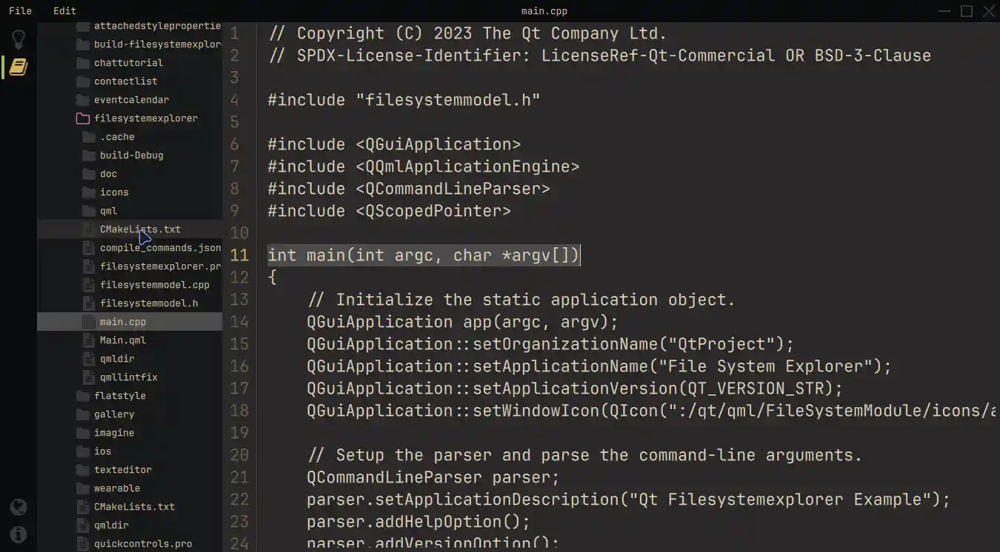

File System Explorer
A desktop QML app utilizing customized Qt Quick Controls to display text files from a filesystem.
In this example, a modern layout is used that consists of three major components. There is an icon-based Sidebar to the left, followed by a resizable TreeView displaying the file system from a QFileSystemModel, and finally the TextArea displaying the selected text files. There is a common look and feel across all operating systems. We accomplish this by using customized quick controls and frameless windows, with our own window decorations. When launching this application from the command-line, you have the option to provide an initial directory as a parameter. This initial directory will be used by the TreeView to set the starting point for displaying the directory structure.

Running the Example
To run the example from Qt Creator, open the Welcome mode and select the example from Examples. For more information, visit Building and Running an Example.
Modern layout and structure
To begin with, we are providing the colors throughout a singleton QML object. In this way, we can provide more structured control over the appearance of the application.
pragma Singleton QtObject { readonly property color background: "#292828" readonly property color surface1: "#171819" readonly property color surface2: "#090A0C" readonly property color text: "#D4BE98" readonly property color textFile: "#E1D2B7" readonly property color disabledText: "#2C313A" readonly property color selection: "#4B4A4A" readonly property color active: "#292828" readonly property color inactive: "#383737" readonly property color folder: "#383737" readonly property color icon: "#383737" readonly property color iconIndicator: "#D5B35D" readonly property color color1: "#A7B464" readonly property color color2: "#D3869B" }
Since we do not want to rely on the operating system's window decoration and instead want to provide our own, we use the FramelessWindowHint flag inside the ApplicationWindow. In order to achieve an equivalent interaction with the window, we override the contentItem property of our customized MenuBar and display some information text as well as interaction possibilities for dragging or closing the application. Inline Components have been used to simplify this process.
component InteractionButton: Rectangle {
id: interactionButton
signal action()
property alias hovered: hoverHandler.hovered
Layout.fillHeight: true
Layout.preferredWidth: height
color: hovered ? Colors.background : "transparent"
HoverHandler {
id: hoverHandler
}
TapHandler {
id: tapHandler
onTapped: interactionButton.action()
}
}
InteractionButton {
id: minimize
onAction: root.dragWindow.showMinimized()
Rectangle {
anchors.centerIn: parent
color: parent.hovered ? Colors.iconIndicator : Colors.icon
height: 2
width: parent.height - 14
}
}
InteractionButton {
id: maximize
...
The Sidebar on the left includes checkable navigation buttons on top and one-shot buttons on the bottom. A ButtonGroup and a Container are used to ensure that only one entry is active at any given time. It is then possible to provide different views using a property alias for the current position, along with a StackLayout.
This technique allows us to simply extend the functionality by adding another button and the corresponding element inside the StackLayout.
StackLayout {
anchors.fill: parent
currentIndex: sidebar.currentTabIndex
// Shows the help text.
Text {
text: qsTr("This example shows how to use and visualize the file system.\n\n"
+ "Customized Qt Quick Components have been used to achieve this look.\n\n"
+ "You can edit the files but they won't be changed on the file system.\n\n"
+ "Click on the folder icon to the left to get started.")
wrapMode: TextArea.Wrap
color: Colors.text
}
// Shows the files on the file system.
FileSystemView {
id: fileSystemView
color: Colors.surface1
onFileClicked: path => root.currentFilePath = path
}
}
The StackLayout includes, besides some information text, the FileSystemView. This custom component displays files and folders and populates it with data from a C++ model. We can then select the files and read them accordingly.
QString FileSystemModel::readFile(const QString &filePath) { // Don't issue errors for an empty path, as the initial binding // will result in an empty path, and that's OK. if (filePath.isEmpty()) return {}; QFile file(filePath); if (file.size() >= 2'000'000) return tr("File size is too big.\nYou can read files up to %1 MB.").arg(2); static const QMimeDatabase db; const QMimeType mime = db.mimeTypeForFile(QFileInfo(file)); // Check if the mimetype is supported and return the content. const auto mimeTypesForFile = mime.parentMimeTypes(); for (const auto &m : mimeTypesForFile) { if (m.contains("text", Qt::CaseInsensitive) || mime.comment().contains("text", Qt::CaseInsensitive)) { if (!file.open(QIODevice::ReadOnly | QIODevice::Text)) return tr("Error opening the File!"); QTextStream stream(&file); return stream.readAll(); } } return tr("Filetype not supported!"); }
By right-clicking on a folder in the TreeView, a popup Menu is opened, which allows control over the rootIndex property of the TreeView.
MyMenu {
id: contextMenu
Action {
text: qsTr("Set as root index")
onTriggered: {
fileSystemTreeView.rootIndex = fileSystemTreeView.index(treeDelegate.row, 0)
}
}
Action {
text: qsTr("Reset root index")
onTriggered: fileSystemTreeView.rootIndex = undefined
}
}
}
By using a SplitView, we are able to dynamically share the space between the StackLayout and the Editor. Our Editor contains the TextArea that displays the opened file and provides us with all the functionality needed to edit text files. Additionally, we provide a visualization of the line numbers, which can be toggled on and off in the Menu.
Editor {
id: editor
showLineNumbers: root.showLineNumbers
currentFilePath: root.currentFilePath
SplitView.fillWidth: true
SplitView.fillHeight: true
}
Custom components
For a better understanding of the customization process, investigate this article first. We are using reusable and customized components throughout this example.
For instance, the MyMenu component customizes Menu's background property as well as its delegates' contentItem and background properties.
// Copyright (C) 2023 The Qt Company Ltd. // SPDX-License-Identifier: LicenseRef-Qt-Commercial OR BSD-3-Clause import QtQuick import QtQuick.Controls.Basic import FileSystemModule Menu { id: root delegate: MenuItem { id: menuItem contentItem: Item { Text { anchors.verticalCenter: parent.verticalCenter anchors.left: parent.left anchors.leftMargin: 5 text: menuItem.text color: enabled ? Colors.text : Colors.disabledText } Rectangle { id: indicator anchors.verticalCenter: parent.verticalCenter anchors.right: parent.right width: 6 height: parent.height visible: menuItem.highlighted color: Colors.color2 } } background: Rectangle { implicitWidth: 210 implicitHeight: 35 color: menuItem.highlighted ? Colors.active : "transparent" } } background: Rectangle { implicitWidth: 210 implicitHeight: 35 color: Colors.surface2 } }
Another example is the customization of the ScrollIndicator inside the FileSystemView, which additionally uses customized animations. Here we also override the contentItem.
ScrollIndicator.vertical: ScrollIndicator {
active: true
implicitWidth: 15
contentItem: Rectangle {
implicitWidth: 6
implicitHeight: 6
color: Colors.color1
opacity: fileSystemTreeView.movingVertically ? 0.5 : 0.0
Behavior on opacity {
OpacityAnimator {
duration: 500
}
}
}
}
Python version
If you're interested in the Python version of this example, you can find it here. This showcases the usage of Qt for Python and demonstrates how it can be used to create the same application.
Additionally, there is a detailed tutorial available that provides step-by-step instructions on how to extend this example with additional features. This tutorial can be helpful if you want to explore and learn more about building upon the existing functionality of the filesystem explorer.